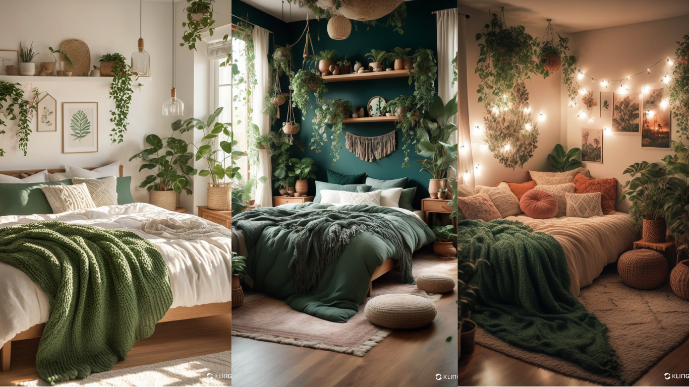
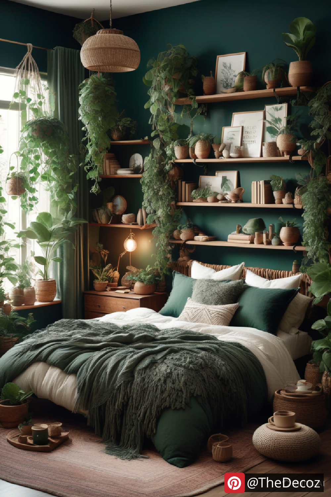
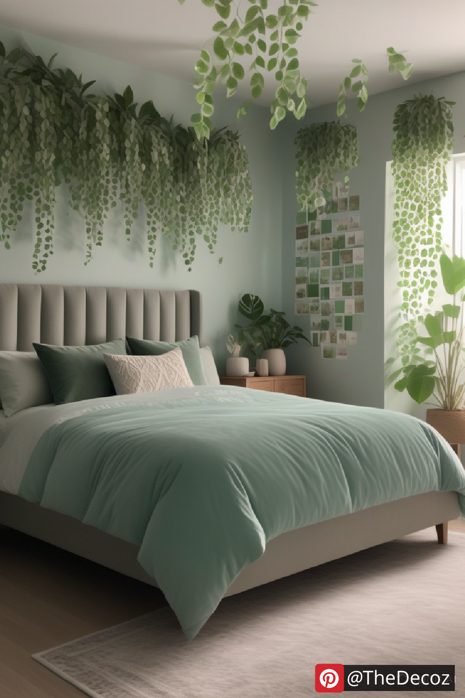
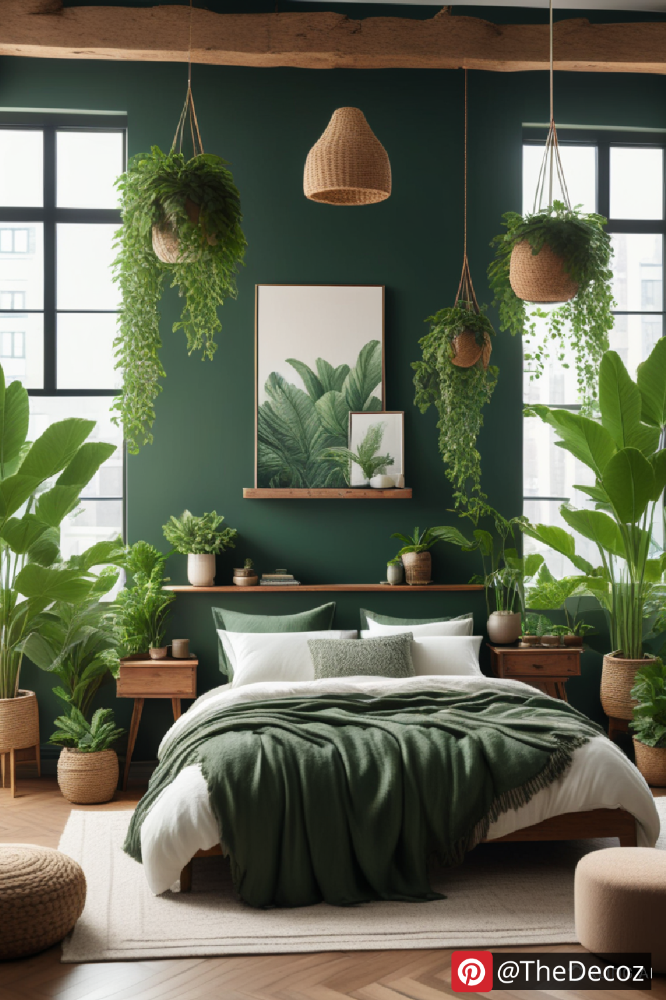
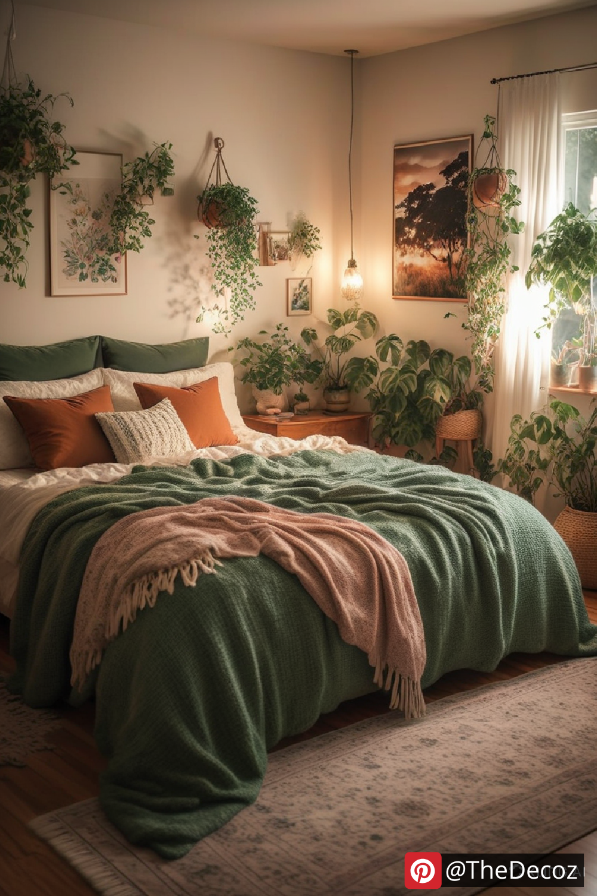
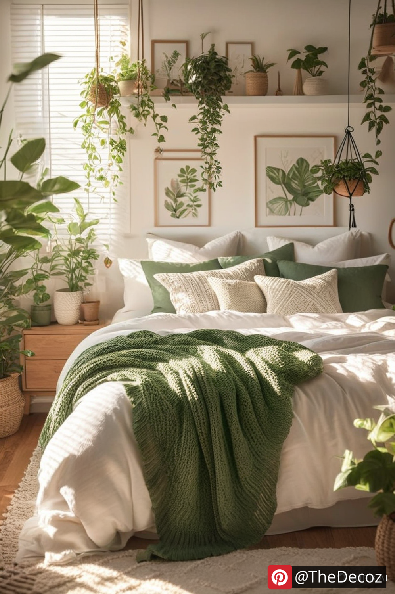

Creating a tranquil and stylish living space is easier than ever with green room decor. Incorporating shades of green into your interior design can enhance the ambiance, promote relaxation, and connect your home with nature. Whether you prefer a subtle touch of greenery or a bold statement, here’s how you can elevate your space with green room decor.
Green is often associated with calmness, renewal, and harmony. Studies suggest that exposure to green tones can reduce stress and boost creativity, making it an excellent choice for home decor. Whether it’s a bedroom, living room, or office, adding green elements can foster a soothing and productive atmosphere.
Green room decor is versatile, as it offers a variety of shades to match different aesthetics:
- Sage Green: A soft, muted tone that provides a sophisticated and calming effect.
- Emerald Green: A rich and luxurious shade that adds depth and elegance.
- Olive Green: A warm, earthy color that pairs beautifully with neutral tones.
- Mint Green: A fresh and airy shade that creates a light and breezy environment.
Painting your walls green is a bold move that instantly transforms your space. For a less permanent option, consider wallpaper with botanical patterns or nature-inspired prints. If you prefer subtlety, green accent walls or trims can add the perfect touch.
Adding indoor plants is one of the easiest ways to embrace green decor. Consider these popular options:
- Monstera: Adds a tropical vibe with its large, striking leaves.
- Snake Plant: A low-maintenance plant that purifies the air.
- Fiddle Leaf Fig: A stylish choice for modern interiors.
- Pothos: A trailing plant that brings effortless greenery to shelves and hanging baskets.
Investing in green furniture pieces such as sofas, chairs, or cabinets can create a sophisticated yet inviting look. If you prefer a more subtle approach, incorporate green textiles like curtains, rugs, throw pillows, and bedding to add a pop of color.
Small decor elements can make a big impact. Consider green vases, candle holders, picture frames, or wall art to integrate the hue seamlessly into your design. Glass and ceramic pieces in varying shades of green can add a refined and cohesive touch.
To ensure a balanced look, pair green with complementary colors:
- Neutral Tones (Beige, Gray, White): Create a harmonious and timeless appeal.
- Gold and Brass Accents: Add a touch of luxury and warmth.
- Wood Elements: Enhance the natural feel of green decor.
- Deep Blues and Mustard Yellow: Provide a bold and contemporary contrast.
Green room decor is a timeless and refreshing way to elevate your interior. Whether through paint, plants, furniture, or accessories, incorporating green hues into your space brings warmth, elegance, and tranquility. Embrace the beauty of nature in your home and create an inviting sanctuary with green room decor.




